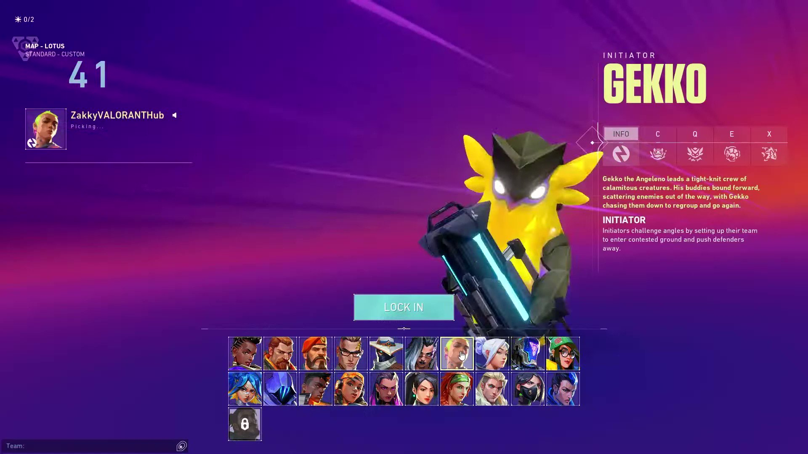

Valorant
Saudações Radiante! Vamos falar um pouco
desse jogo que todos nós amamos e odiamos!?
Valorant é um jogo eletrônico multijogador gratuito para jogar de tiro
em primeira pessoa desenvolvido e publicado pela Riot Games. É o primeiro jogo
do gênero desenvolvido pela empresa, sendo anunciado pela primeira vez com o codinome
Project A em outubro de 2019, em um evento de comemoração de 10 anos de League of Legends.
Foi lançado em 2 de junho de 2020 para Microsoft Windows.

Jogabilidade
Duas equipes de cinco jogam uma contra a outra, e os jogadores assumem o papel de
"agentes" com habilidades únicas. No modo de jogo principal, a equipe atacante
tem uma bomba, chamada Spike, que eles precisam plantar em um local. Se a equipe
atacante proteger com sucesso a bomba e ela detonar, eles ganharão um ponto. Se a
equipe defensora desarmar com sucesso a bomba ou o cronômetro de 100 segundos da
rodada expirar, a equipe defensora receberá um ponto. Eliminar todos os membros
da equipe adversária também ganha uma rodada. A primeira equipe a vencer o melhor
de 24 rodadas vence a partida.

A História de Valorant
Tudo começa em 2039, em um futuro relativamente próximo, quando ocorre um evento
conhecido como Primeira Luz. O fenômeno, que acontece em diversos lugares do mundo,
consiste no surgimento de estranhos anéis de luz que trazem um novo elemento para o
planeta Terra. A radianita, até então desconhecida, é extremamente poderosa e se torna
importantíssima para toda a humanidade.
Após a Primeira Luz, alguns indivíduos expostos à radianita sofrem mutações e ganham
poderes, passando a ser conhecidos como radiantes. As habilidades dessas pessoas muitas
vezes são simples, mas alguns indivíduos têm poderes incríveis, capazes de torná-los
imortais, viajar entre realidades e até mesmo trazer pessoas de volta à vida.
Como nem todos os radiantes acabam do "lado do bem", usando os poderes em prol da
humanidade, é criado o Protocolo Valorant. Fundado por um grupo misterioso sob a tutela da
corporação Kingdom, o objetivo do projeto é manter os radiantes sob controle, com a missão
de proteger o planeta em caso de outros indivíduos com habilidades especiais se tornarem
um problema.
Além de pessoas com poderes originados da radianita, o protocolo conta com agentes
"comuns", pessoas sem habilidades despertadas na Primeira Luz. Esses agentes são treinados
para manipular armas e equipamentos criados e fornecidos pela Kingdom utilizando o novo
elemento, sendo então capazes de enfrentar radiantes em pé de igualdade.